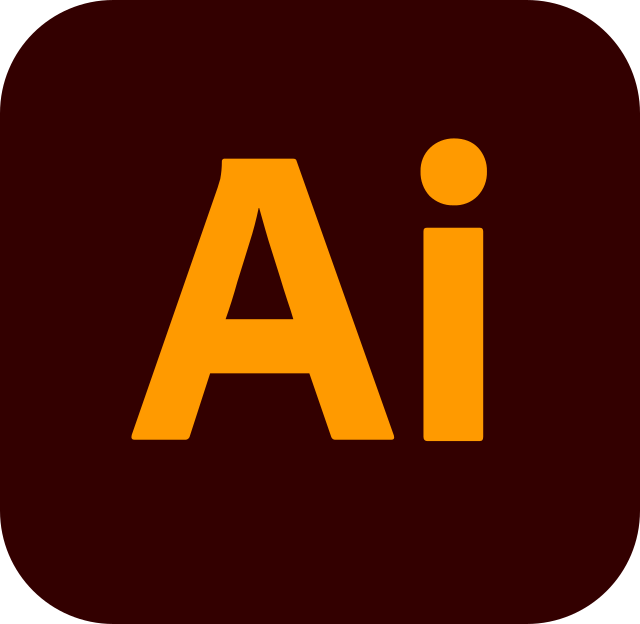

Lista de Definiciones
- Adobe Illustrator
- Adobe Illustrator (AI) es un editor de gráficos vectoriales que sirve, entre otras cosas, para la ilustración como rama del arte digital, técnica o de diseño gráfico.
- Adobe Photoshop
- Adobe Photoshop es un editor de fotografías desarrollado por Adobe Systems Incorporated. Usado principalmente para el retoque de fotografías y gráficos, su nombre en español significa "tienda de fotos".2 Es conocido mundialmente. Fue creado en 1986 por los hermanos Thomas Knoll y John Knoll, desde entonces se ha convertido en una marca de uso común, lo que lleva a su uso como un verbo ('photoshopear'), aunque Adobe desaconseja su uso..
- Adobe After Effects
- Adobe After Effects es una aplicación que tiene forma de estudio destinado para la creación o aplicación en una composición, así como realización de gráficos profesionales en movimiento y efectos especiales, que desde sus raíces han consistido básicamente en la superposición de capas. Adobe After Effects es uno de los softwares basados en línea de tiempo más potentes del mercado junto con Autodesk Combustion y Eyeon Fusion.
